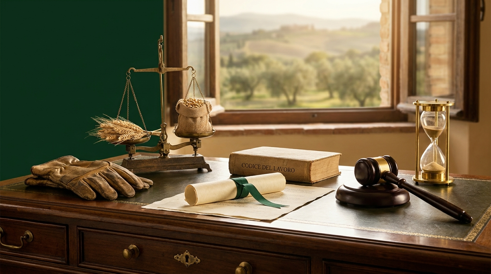

Caporalato in agricoltura: controlli INL rafforzati per l'estate 2026
L'Ispettorato Nazionale del Lavoro avvia una campagna straordinaria di vigilanza sul caporalato in agricoltura per tutta l'estate 2026. Controlli a tappeto su tutto il territorio nazionale, con attenzione a condizioni di lavoro, retribuzioni e intermediazione illecita di manodopera. Per le aziende agricole il tema non è solo sanzionatorio: è anche reputazionale e contrattuale.

Il contesto
L'Ispettorato Nazionale del Lavoro (INL) ha annunciato un'intensificazione dei controlli sul caporalato nel settore agricolo per l'intera stagione estiva 2026. La scelta del periodo non è casuale: l'estate concentra le campagne di raccolta e il picco di domanda di manodopera stagionale, terreno storicamente esposto a forme di intermediazione illecita e sfruttamento.
La campagna interessa l'intero territorio nazionale e prevede verifiche su più fronti: regolarità dei rapporti di lavoro, condizioni di alloggio e trasporto, rispetto degli orari, corresponsione effettiva delle retribuzioni contrattuali.
Inquadramento normativo
Il riferimento principale è l'art. 603-bis del codice penale, che punisce l'intermediazione illecita e lo sfruttamento del lavoro. La norma colpisce chi recluta manodopera per destinarla al lavoro presso terzi in condizioni di sfruttamento, approfittando dello stato di bisogno dei lavoratori, ma anche chi utilizza, assume o impiega tale manodopera.
Gli indici di sfruttamento individuati dalla legge comprendono: retribuzioni difformi dai contratti collettivi o comunque sproporzionate, violazione delle norme su orario, riposo e ferie, violazione delle norme su sicurezza e igiene, sottoposizione a condizioni di lavoro degradanti. Basta la ricorrenza di alcuni di questi elementi per far scattare la contestazione.
Sul piano amministrativo restano applicabili le sanzioni per lavoro irregolare e l'eventuale provvedimento di sospensione dell'attività imprenditoriale previsto dall'art. 14 del d.lgs. 81/2008, quando si superano determinate soglie di personale impiegato in nero.
Implicazioni pratiche per le aziende agricole
È importante chiarire un punto: la responsabilità non riguarda solo l'intermediario, il cosiddetto "caporale". La norma penale coinvolge anche l'azienda utilizzatrice che impiega manodopera in condizioni di sfruttamento, anche quando il reclutamento è stato gestito da un terzo.
Questo significa che l'imprenditore agricolo non può limitarsi a delegare il reperimento dei lavoratori a soggetti esterni senza verificarne la regolarità. La filiera di fornitura della manodopera diventa un'area di rischio diretto.
Le conseguenze non sono solo penali. Una contestazione può comportare la perdita di benefici contributivi e fiscali, l'esclusione da appalti e finanziamenti pubblici, danni reputazionali significativi nei rapporti con la grande distribuzione, sempre più attenta alla sostenibilità sociale delle forniture.
Va inoltre considerato che la Rete del lavoro agricolo di qualità, gestita dall'INPS, rappresenta uno strumento di certificazione della regolarità aziendale. L'iscrizione, subordinata all'assenza di condanne e di provvedimenti per violazioni in materia di lavoro, può alleggerire la posizione dell'impresa nei controlli.
Cosa fare in concreto
- Verificate la regolarità di ogni rapporto di lavoro: comunicazioni obbligatorie di assunzione, contratti, libro unico del lavoro e buste paga devono essere allineati alle prestazioni effettive e ai minimi del contratto collettivo applicabile.
- Controllate la filiera di reclutamento: se utilizzate cooperative, agenzie o intermediari per reperire manodopera stagionale, acquisite documentazione sulla loro regolarità contributiva e contrattuale. La delega non esclude la vostra responsabilità.
- Documentate alloggio, trasporto e orari: dove fornite questi servizi ai lavoratori, conservate prova delle condizioni offerte. Sono tra i primi elementi verificati dagli ispettori.
- Valutate l'iscrizione alla Rete del lavoro agricolo di qualità: rappresenta un indicatore di affidabilità utile sia in sede di controllo sia nei rapporti commerciali.
- Predisponete un protocollo interno per gli accessi ispettivi: individuate un referente, raccogliete in anticipo la documentazione richiamabile, evitate comportamenti che possano essere interpretati come ostativi alla vigilanza.
Consigliamo, in presenza di rapporti di lavoro stagionali numerosi o di intermediazione esterna della manodopera, una verifica preventiva della posizione aziendale prima dell'avvio della campagna estiva. Intervenire in anticipo sulle eventuali criticità è sempre più efficace che gestirle dopo un accesso ispettivo.
Disclaimer
Contributo informativo a cura di Tamburro & Partners - Avv. Giuseppe Tamburro. Non costituisce parere legale.
Ogni storia di lavoro ha i suoi tempi.
Se gestisci HR e vuoi un confronto su contenzioso, ispezioni o licenziamenti, scrivi allo studio. Ti rispondiamo entro un giorno lavorativo.